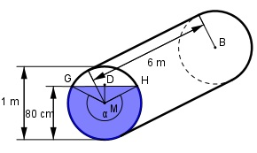

Aufgabe 122 In einem Kanalrohr mit einem Durchmesser von 1 m und einer Länge von 6 m steht Wasser 80 cm hoch. Wie groß ist die Fläche A, die von Wasser benetzt ist?

MD = 0,8 m – 1/2 m = 0,3 m MH = r = 1/2 m = 0,5 m Im Dreieck MHD: Winkel bei M = β MD 0,3 m cos β = ------ = -------- = 0,6 --> β = 53,1° MH 0,5 m α = 360° - 2 * β = 360° - 2 * 53,1° = 253,8° 2 * π * r * α Bogen GH = ----------------- = 360° 2 * π * 0,5 m * 253,8° = ------------------------ = 2,2 m 360° Benetzte Fläche A = Bogen GH * l = 2,2 m * 6 m = 13,2 m2